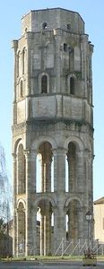
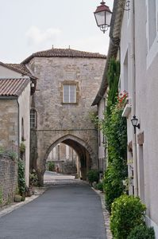
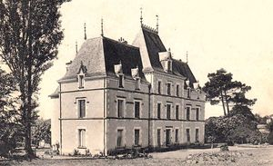
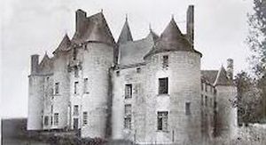
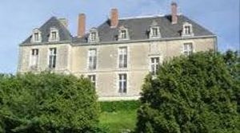
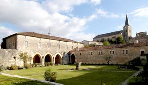

Recensement Jean-Claude Truffet
| Département | 86 — Vienne |
| Canton | Charroux |
| Commune | Charroux |
| Type d'édifice | Château |
| Période d'origine | XV-XVII |






Ville de Charroux , la tour de Charlemagne, la Grollière, Rochemaux, Chateauneuf, la Roche. CHARROUX, en 1422, le château des comtes de la Marche, malgré ses fortifications, n'est plus que ruines. Après la guerre de Cent Ans, labbé Jean Chaperon rénove et reconstruit une partie des bâtiments. Les Bourbons héritent du comté de Basse-Marche, et leur rivalité avec les Valois vaut à labbé dobtenir la prépondérance sur le comte en 1481.Au milieu du XVe siècle, la distinction entre Bourg l'Abbé et Bourg le Comte disparait. Le bourg, dorénavant, se dénommera Charroux. La "nouvelle" ville continue de profiter de l'affluence des pèlerins et développe ses foires : de trois siècles plus tôt, au XVIIIe siècle, il y en aura 11 églises et chapelles seront construites ainsi que deux aumôneries. Des activités de tannerie et de textiles se développent, des artisans travaillant le cuir s'installent dans le bourg. Dressé au bord du côteau dominant la Charente ce château est édifié à l'emplacement d'une forteresse féodale du Xe siècle. Entreprise par Georges d' Aubusson, seigneur de Rochemeaux et sénéchal de Basse Marche, la construction est achevée par sa veuve en 1633. Un soubassement est destiné à rattraper la dénivellation sur la façade orientée vers la vallée .
ROCHEMAUX, des XVe et XVIIe siècles, inscrit depuis 1982 pour son élévation et sa toiture, l'édifice actuel a succédé à un château du XIe siècle. Siège d'une châtellenie relevant du comté de Basse-Marche, le fief est érigé en 1599 en vicomté au profit de Jean Grain, seigneur de Saint Marsault. La disparition du pavillon nord-est a modifié la silhouette sans altérer la correction des proportions. La façade sur cour comporte un rez-de-chaussée surélevé et un étage carré sous comble à lucarnes. La façade la plus imposante regarde la vallée, de très beaux oculi ovales sont percés dans le mur pour éclairer les offices en sous-sol, le décor se concentre sur les lucarnes et sur la porte principale. Précédée d'un perron, celle-ci présente un fronton curviligne. A l'intérieur l'élément le plus remarquable est l'escalier aux volées droites. Cette construction homogène est escortée par une tour circulaire isolée à mi pente, vestige de l'ancienne courtine, et par une chapelle néo-gothique postée dans la cour d'honneur. Le pavillon d'angle restant présent, sur sa face la plus large, des arases de pierre et des contreforts. Le château devait posséder autrefois des ailes partant des pavillons et fermant la cour. Le sous-sol se compose de plusieurs salles agrémentées de cheminées médiévales. Au rez-de-chaussée et à l'étage les cheminées datent du XVIIe siècle. Dominant le cur du village, la Tour « Charlemagne » perpétue le souvenir de lune des plus puissantes abbayes bénédictines de la France médiévale. Lhistoire de Charroux commence avec son abbaye Saint-Sauveur fondée en 789. Charlemagne et le Comte de Limoges Roger ainsi que sa femme Euphrasie la dotèrent de biens se trouvant dans le Poitou.
Seigneurs locaux
"
la tour de Charlemagne grav-1-2, la Grollière, Rochemaux grav-5, Chateauneuf pin grav-4, la Roche grav-5. abbaye grav-6 Charroux 46° 08' 43" nord, 0° 24' 16" est